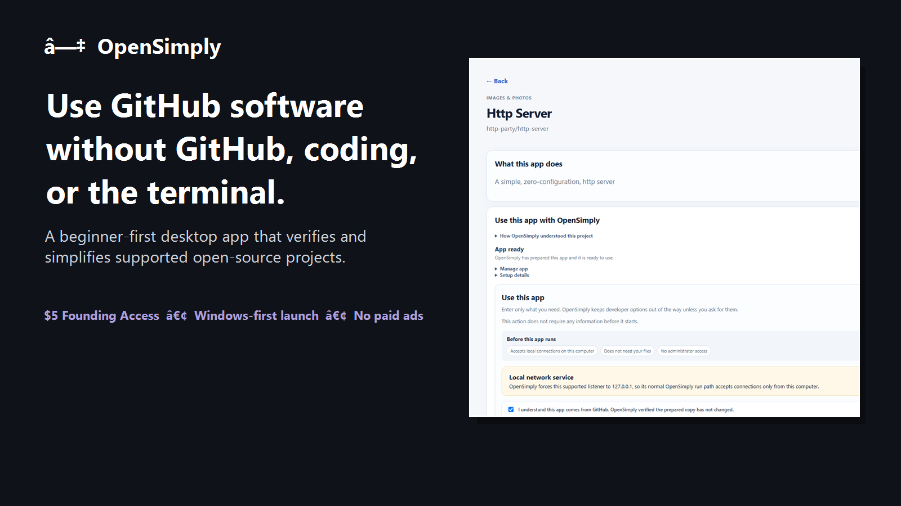
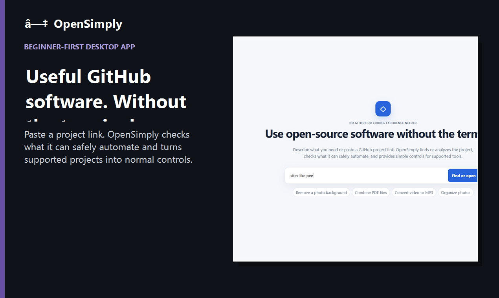
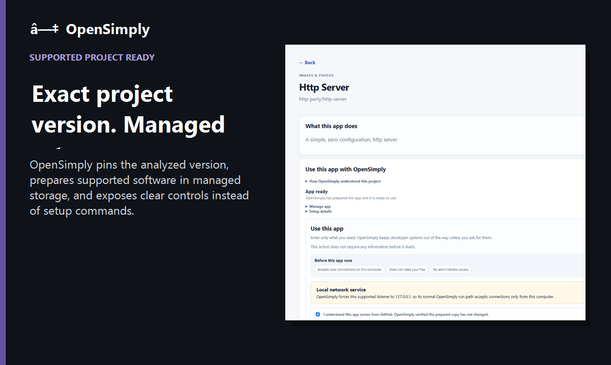
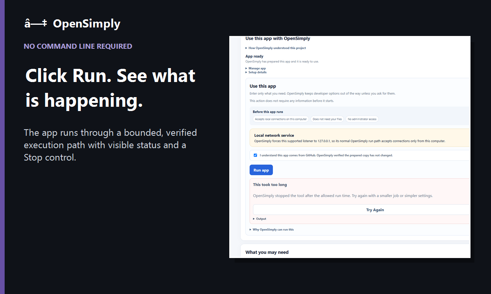
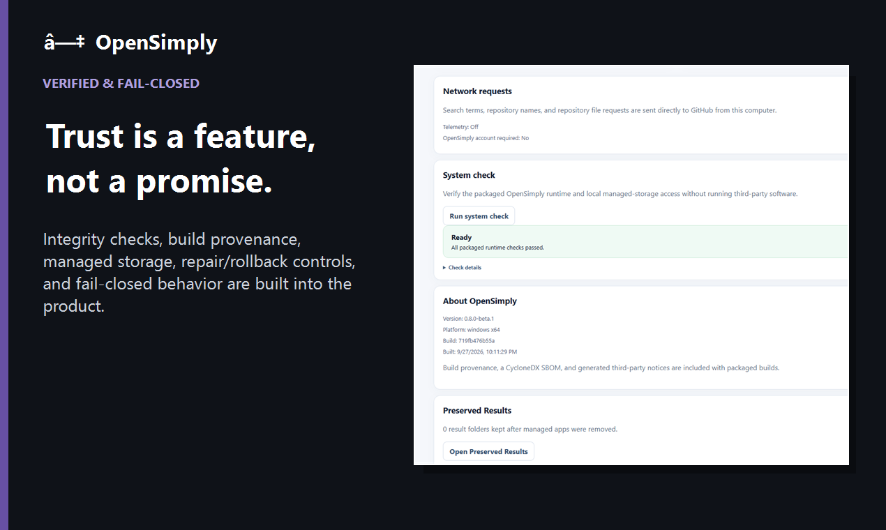

OpenSimply turns supported open-source GitHub projects into normal desktop apps with verified setup, managed storage, and simple controls.
Windows launch first. macOS follows only after revenue justifies Apple signing/notarization costs.

Instructions like git clone, npm install, pip install, or cargo build are a stopping point for many people.
Search for a tool or paste a repository directly. No command line required.
It pins the analyzed version and enables automation only when the repository provides enough deterministic evidence.
Supported projects become managed apps with clear status, Stop, repair, reset, and rollback controls.
The demo uses screenshots captured from the validated packaged OpenSimply application. No mock UI.




It is not a generic AI shell. Unsupported or ambiguous repositories are intentionally blocked rather than given invented commands.
Windows-first keeps upfront costs low and lets us prove demand before adding recurring platform expenses.
Whop will be the first paid storefront. The Windows download will go live there once the trusted delivery path is finalized. Microsoft Store is technically prepared but deferred until a business/publisher identity is worth setting up.
No payment is collected from this preview page.